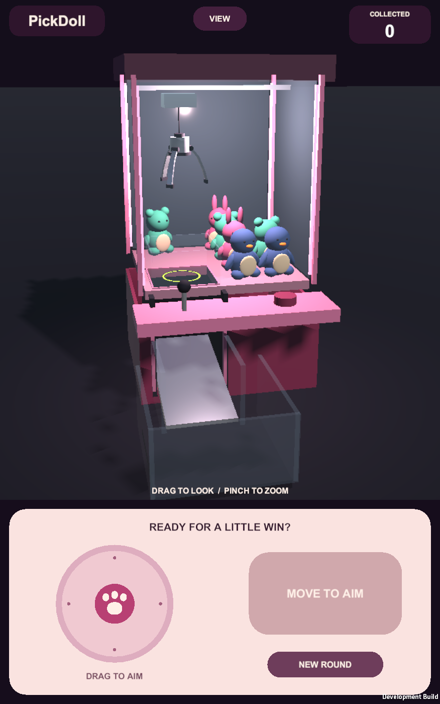
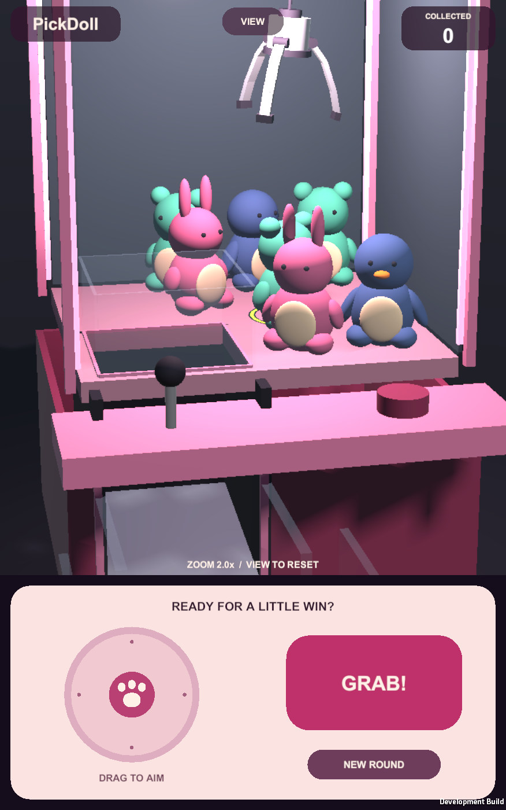
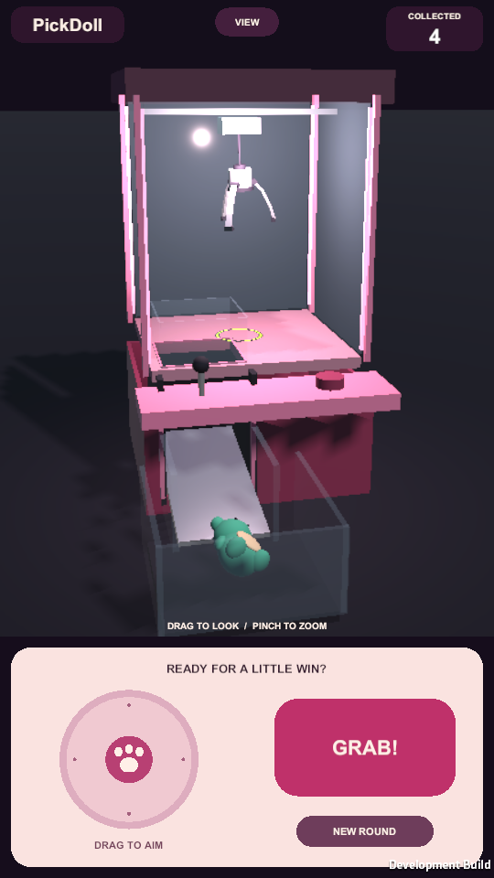
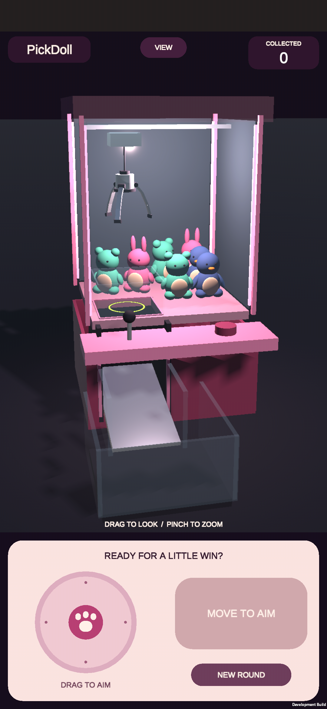
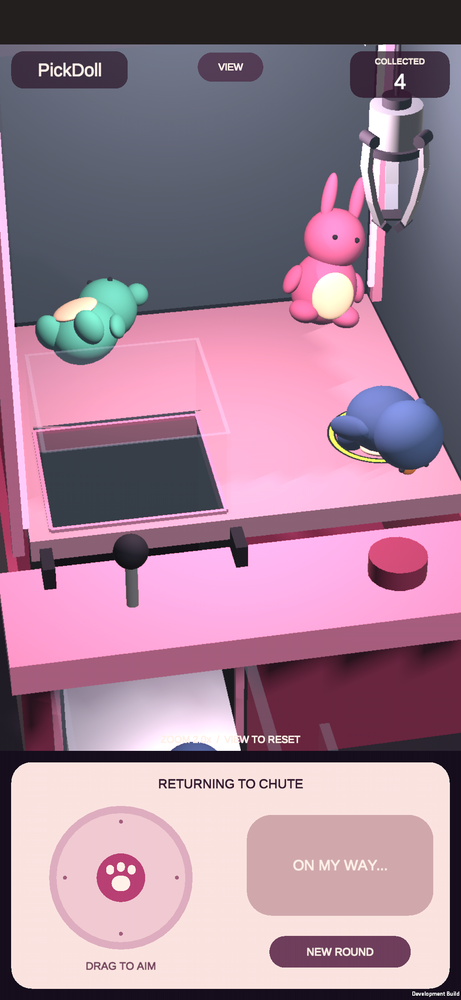

새 판마다 새 배치
민트 곰·베리 토끼·펭귄의 임시 모델. 둥근 몸통과 배·팔을 추가하고 귀·부리·날개로 구분한다.
배출구 위에서 시작하고, 인형 3종을 7개씩 새로 배치한다. 배출 완료 후의 누적 획득은 앱을 다시 켜도 이어진다.
민트 곰·베리 토끼·펭귄의 임시 모델. 둥근 몸통과 배·팔을 추가하고 귀·부리·날개로 구분한다.
누적 획득과 종류별 기록을 함께 보존한다. NEW ROUND는 배치만 바꾸고 수집 기록을 지우지 않는다.
작은 타이틀·획득 배지만 남기고 상단 뒤까지 게임을 그린다. 시작 위치는 배출구 위의 상단 대기점이다.
| 항목 | 동작 |
|---|---|
| 시작 위치 | 이동 장치·매달림 기준점·본체·손가락·조준원을 함께 배출구 중심 위로 옮겼다. 구멍 위 하강은 차단하고, 조이스틱으로 이동하면 집기를 시작한다. 새 판과 배출 후 중앙 복귀는 기존 동작을 유지한다. 다음 차수에 배출구 위 대기로 통일한다. |
| 상단 HUD | 연속 불투명 바 제거. 타이틀 48→32, 획득 숫자 56→38의 기준 글꼴 크기로 줄이고 대비 있는 작은 배지를 사용한다. 빈 상단 영역도 시점·줌 터치에 연결한다. |
| 종류 데이터 | 고정 species ID와 표시 이름·질량·무게중심·배치 여유를 데이터로 분리했다. 이번 3종은 기존 몸통 접촉 기반과 100g 질량을 유지하는 임시 모델이며 토끼 귀에는 충돌체를 추가했다. 최종 형태별 질량 배분·난이도 튜닝은 8–10주차다. |
| 랜덤 배치 | 구멍 주변을 제외한 안전 셀을 섞고 위치에 작은 변화를 준다. 최초 실행·NEW ROUND마다 총 7개, 곰 3·토끼 2·펭귄 2개를 구성한다. 벽·초기 몸통 겹침을 피하며 완전한 연속 균등 분포는 아니다. |
| 획득·저장 | 입구를 통과하고 인형 전체가 출구 밖으로 나온 경우에만 영수증을 저장한다. 저장 성공 후 1회 획득 이벤트를 발생시킨다. 반복 물리 검사는 같은 영수증을 중복 집계하지 않는다. |
| 파일 보호 | 임시 파일을 기록·flush한 후 원본을 교체한다. 읽을 수 있는 이전 저장을 백업하며 원본 손상 시 복구한다. 두 파일이 모두 손상되면 원본을 덮어쓰지 않고 SAVE ERROR를 표시한다. |



에디터와 Windows 물리·입력·저장 검사 통과. 폰·폴드·탭 화면 비율 검사와 Android APK 빌드·v2 서명 검증 통과. S26 0.7.0 / code 9 설치·실행 및 초기 화면 확인 완료. 실기기 실제 획득 4개와 종류별 원본·이전 백업 저장을 확인했다. 새 판·프로세스 재실행 후 숫자 유지는 사용자 확인 대기.
PASS 7 toys / 3 definitions 500 random layouts without overlaps, wall or chute intersection Startup over chute Atomic receipt persistence, dedup, species totals, reload, backup recovery, corrupt-file preservation
PASS startup_joint_assembly_stable=True seven_prizes_three_species_stable=True transparent_header_rendered_behind=True analog_drag_precision_release_ownership=True; small=0.0071; full=0.1335 joystick_excludes_camera_raycast=True empty_header_routes_camera_gestures=True pinch_1_to_2_limits_view_reset_no_yaw_jump=True direction_and_precision_buttons_removed=True safe_touch_layout_540x960=True closed_start_opens_before_descent=True exit_without_chute_not_counted=True entry_only_not_counted=True upright_delivery=True; duplicate_probes_once=True; pos=(-0.23, 0.14, -1.15) gravity_pose_90=True; pos=(-0.16, 0.14, -1.09) gravity_pose_180=True; pos=(-0.23, 0.14, -1.05) transparent_guard_blocks_rolling=True; pos=(-0.23, 0.73, 0.06) automatic_0: acquired=True; home=True; visible_tray=True; busy_input_blocked=True; no_early_count=True; high_release=True; pos=(-0.22, 0.14, -1.07); total=4 automatic_1: acquired=True; home=True; visible_tray=True; busy_input_blocked=True; no_early_count=True; high_release=True; pos=(-0.17, 0.14, -1.09); total=5 automatic_2: acquired=True; home=True; visible_tray=True; busy_input_blocked=True; no_early_count=True; high_release=True; pos=(-0.04, 0.14, -1.18); total=6 empty_cycle_returns_without_acquisition=True new_round_preserves_session_count=True; events=6; total=6 large_counter_matches_receipts=True grab_over_hole_blocked=True reload_preserves_total_and_species=True
지정 조준·일반 그립의 회귀 검사이며 실제 플레이 전체 승률을 뜻하지 않는다. 약한 그립 확률은 기존대로 유지한다. 검사 파일은 실제 게스트 기록과 격리했다.
PASS startup_joint_assembly_stable=True seven_prizes_three_species_stable=True transparent_header_rendered_behind=True analog_drag_precision_release_ownership=True; small=0.0074; full=0.1335 joystick_excludes_camera_raycast=True empty_header_routes_camera_gestures=True pinch_1_to_2_limits_view_reset_no_yaw_jump=True direction_and_precision_buttons_removed=True safe_touch_layout_452x1158=True
PASS startup_joint_assembly_stable=True seven_prizes_three_species_stable=True transparent_header_rendered_behind=True analog_drag_precision_release_ownership=True; small=0.0055; full=0.1335 joystick_excludes_camera_raycast=True empty_header_routes_camera_gestures=True pinch_1_to_2_limits_view_reset_no_yaw_jump=True direction_and_precision_buttons_removed=True safe_touch_layout_906x1088=True
PASS startup_joint_assembly_stable=True seven_prizes_three_species_stable=True transparent_header_rendered_behind=True analog_drag_precision_release_ownership=True; small=0.0069; full=0.1303 joystick_excludes_camera_raycast=True empty_header_routes_camera_gestures=True pinch_1_to_2_limits_view_reset_no_yaw_jump=True direction_and_precision_buttons_removed=True safe_touch_layout_876x1400=True
화면 비율 검사는 Windows 플레이어의 시뮬레이션이다. 이번 주 폴드5 실물 접기·펼치기 시험을 대체하지 않는다.

0.7.0 / code 9 · ARM64 · 개발용 APK
42,144,285 bytes · v2 서명 검증 통과
Unity/Builds/Week07/Android/PickDoll-week07.apk
SHA-256533f0c65c38bd0044dd1ed53515b65c438e5e272fefb93b6c3239512e6956c07
설치·전면 실행, 초기 집게 안정성, 3종 7개 표시, 작은 상단 HUD를 확인했다. 실제 배출 후 누적 4개(곰 2·토끼 1·펭귄 1)가 로컬 원본 파일에, 이전 3개가 백업에 기록된 것을 읽기 전용으로 확인했다. NEW ROUND·프로세스 재실행 후 표시 유지의 사용자 확인은 미수신 상태로 남긴다. 사용자는 현재 범위로 PR·머지 후 릴리즈를 요청했으며 후속 조작 피드백은 다음 차수로 이관했다.
기존 AssetPackManager 시작 로그는 이번 버전에서도 관찰했다. 게임은 실행되며, 원인 조사·대응은 전체 계획의 16주차 항목을 유지한다. 이번 버전에서 해결됐다고 기록하지 않는다.

8주차 대기 위치 통일: 0.7.0은 앱 최초 실행만 배출구 위에서 시작하고 NEW ROUND·배출 후에는 중앙으로 돌아온다. 사용자 품평에서 시작 위치가 반영되지 않은 것처럼 느껴진다는 지적이 있었다. 2026년 11월 24일 사용자 요청으로 수정은 다음 차수에 진행한다. 새 판과 배출 후 대기도 배출구 위로 통일하고, 본체·손가락·매달림 기준점·조준원의 안정성과 이동 후 집기를 검증한다.
8주차 추가 집기 기준: 누운 곰·토끼·펭귄의 접근·하강·집기·상승·배출을 검증한다. 고정 높이에만 의존하지 않고 인형과 충분한 접촉이 일정 시간 유지되면 하강을 멈추는 방식을 검토한다. 접촉 강도 임계값과 지속시간은 실측해 조정하며, 최대 하강 깊이·하강 시간·누르는 힘을 제한한다. 바닥·벽 접촉도 구분해 끼임·과도한 관절 힘·인형 튀어 오름을 방지한다. 선 자세·누운 자세·쌓인 자세와 빈 바닥 조건을 함께 확인한다.
2026년 11월 24일: 인형이 푹신해 보이길 원하며, 정렬된 선 자세 대신 눕거나 서로 겹쳐 쌓인 배치가 필요하다는 피드백을 받았다.
8주차에 기울기·눕기·기대기·자연스러운 쌓임 배치를 추가하고, 10주차의 천 재질·봉제선·접촉 눌림과 복원 연출로 푹신함을 보강한다. 이번 7주차 APK에는 추가하지 않는다. 세부 완료 기준은 전체 계획에 기록했다.
현재는 이 기기의 로컬 게스트 기록이다. 앱 종료·프로세스 재실행·일반 업데이트에서는 보존하지만 앱 삭제·데이터 초기화·기기 변경 복원은 제공하지 않는다. Google Play Games는 12주차, 클라우드 복원은 13주차 계획이다.
물리 진행 중인 판은 저장하지 않는다. 재실행하면 새 7개 배치로 시작하며, 배출이 끝나 저장된 획득만 남는다. 저장 기능 이전 버전의 세션 카운트는 파일이 없어 가져올 수 없다. 도감 화면은 11주차에 연결한다.
다음 8주차는 동물 후보의 실루엣·충돌체·질량 배분을 확장한다. 이번 3종은 최종 아트가 아니며, 화면에서 귀·팔 등이 보이는 만큼 최종 접촉 형상과도 맞추는 작업을 이어간다.